一、问题怎样定义？
核心问题不是“把每本书强行分成宋体、欧体、软体”，而是把字体拆成可连续测量的局部形态：横画是否平稳、竖画是否倾斜、撇捺怎样收放、复合笔是否曲折、首中尾粗细是否变化、左右墨区是否对称，以及这些特征在同一本书中是否一致。
- 宋、元、明、清及八个小时期的书级字体形态是否存在群体差异？
- 同一时期内部，官刻和私刻是否形成可重复的形态差异？
- 清代内部更适合解释为几个离散类别，还是若干连续风格轴？
三锚本分类只保留为“与三本实体书的相似度”，不能代替完整字体类型学。《汉书评林》也不等于抽象的标准宋体。
二、从书影到研究变量：全过程
同一批字贯穿各步骤
下面固定使用“子、之、大、有、書、水”六个真实字框：原始RGB、红修复＋NLM、C10墨区、最终模型候选和标准逐笔映射逐行一一对应，不再让不同任务各挑不同字。
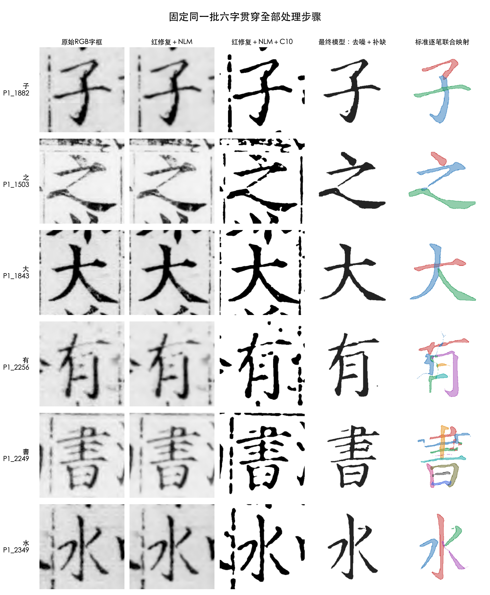
第二列是确定采用的红修复＋NLM；第三列显示其二值化结果仍可能包含邻字、栏线或断裂；第四列是最终checkpoint输出；第五列是同一输出的逐笔联合映射。
三、红修复＋NLM，以及后续去噪补缺
基础去噪流程已经确定：先识别红色印记像素并修复背景，再运行NLM，随后以自适应C10生成初始二值墨区。这一部分就是本项目所说的“去噪”，不再改写成其他方法。
在此基础上，最终候选模型针对2,894个字符和多字体合成损坏训练，进一步处理邻字／栏线伪墨、断裂和缺笔。损失包含加权像素交叉熵、Dice和L1。上面的固定六字图可直接比较第二、三、四列。
本报告是否使用最后的模型和既有数据库？
checkpoint_epoch2.pt，SHA-256：9b64cee9…b39e62。输入是只读的native_masks.npy，SHA-256：ac7a55a4…a8aef。43个预测分片、43个审计文件以及服务器425个特征分片均沿用已经完成并核验的正式结果，报告没有覆盖原数组，也没有换成临时模型。本页为了统一展示六个字，只按原参数重新渲染了一次确定性的“红修复＋NLM＋C10”中间过程；最终模型、逐笔映射、414维表和统计结果直接读取既有正式产物。
四、笔画提取与标准逐笔联合映射
Make Me a Hanzi提供现代标准中心线和笔顺拓扑。系统不是逐笔独立硬套，而是把一个字的全部标准笔画联合变形到模型候选墨区，保留笔画身份、共享变形关系和无法解释的残差。173个缺少资源或存在异体冲突的字符不能强制映射。
仍使用上一节固定的“子、之、大、有、書、水”：统一对照图第四列是最终模型候选，第五列是对应的彩色逐笔映射。颜色只表示笔画身份，不代表历史真实运笔。
为什么中心线不等于粗细？
中心线只定义沿笔位置q。粗细必须回到完整二维墨区，在中心线法向上直接测量横截面。每笔采样32个位置，得到起笔、中段、收笔和局部变化曲线。
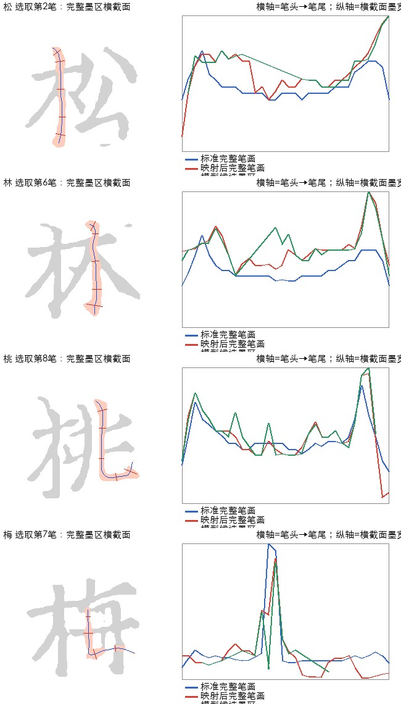
左侧是完整墨区与选中笔画，右侧比较标准笔面、映射后完整笔面和实际观察墨宽。研究的是完整二维笔画，不把骨架长度冒充笔画粗细。
五、414维特征工程怎样形成？
整体方向偏差、长度比、法向偏移。
起／中／末宽度、首尾收放、左右不对称。
有符号平均、起中末方向、绝对偏差、方向IQR、沿笔总变化。
平均及起中末法向偏移、法向IQR。
32点平均宽度比、沿笔宽度CV。
沿笔切向偏移绝对均值。
六类笔画为H横、V竖、L左斜／撇、R右斜／捺、D点／短笔、C折钩／弯曲复合笔。每类分别计算mean、median和IQR，避免横竖撇捺混合后互相抵消。
正式全量分析先合并同书—同字—同类笔画，再按字符＋笔画类型跨书中心化，控制文字内容；之后回归去除P1/P2来源、原生尺寸和字符支持，最后让几何、宽度、不对称三个特征族等权。
六、训练与测试：哪些分数可以相信？
去噪补缺模型
使用多字体、多损坏合成训练；最终checkpoint固定后对423,987字推理，原始数组只读。由于没有历史清洁GT，不能把合成测试IoU称为历史复原准确率。
三锚本识别
982个三书共享字符按589训练、196验证、197冻结测试。K=3三字联合、完整局部profile在“未见字符、已见三本实体书”上达到98.4%，但不代表未见书或通用字体类型准确率。
414维时期监督分类
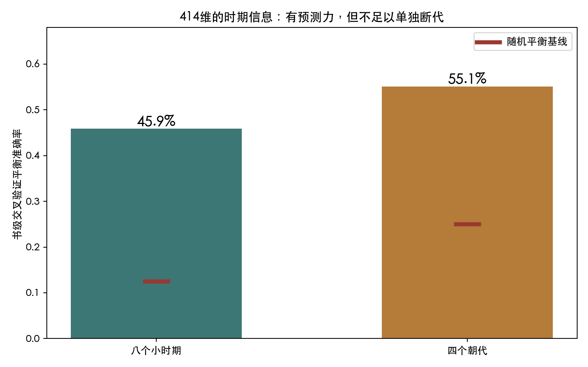
382本书按整本留出。414维＋Logistic：八小时期平衡准确率45.9%（随机12.5%），四朝代55.1%（随机25%）；都高于置换基线p=.005，但仍只有中等预测能力，不能单独作为断代器。
七、时代是否真的有差异？怎样解释显著性？
表示大量单变量坐标在八时期之间分布不同，且经过BH多重校正；这些坐标高度相关，不能说发现396个独立历史机制。
时期中心解释约6.6%的总形态变异；随机打乱时期标签几乎得不到这么大的整体分离。但约93.4%变异仍在时期内部或来自其他因素。
结论：时代之间存在统计可检出的群体差异，但书与书大量重叠，时代不是字体风格的唯一决定因素。“显著”不等于“差异巨大”，也不等于可准确断代。
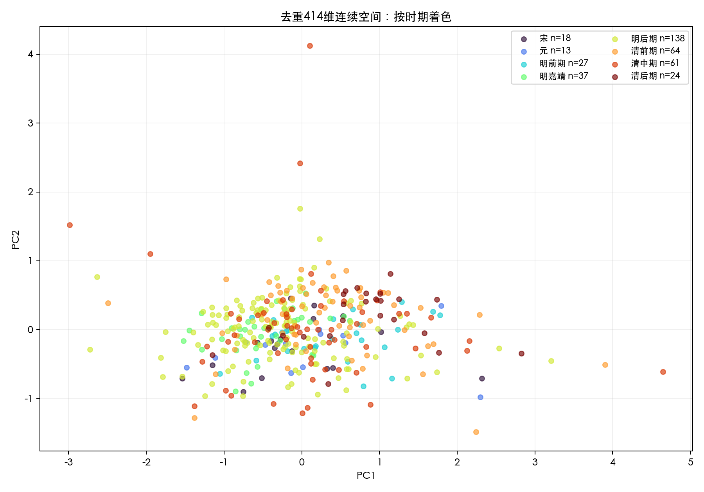
相邻时期变化最大在哪里？
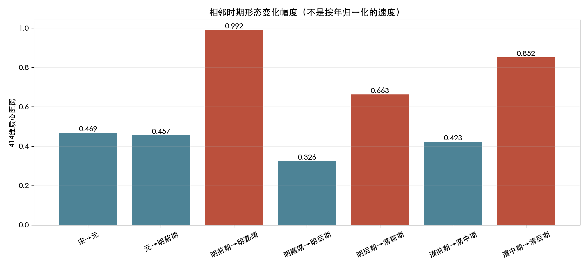
| period_a | period_b | centroid_distance_414 | permutation_p | BH_q_28pairs |
|---|---|---|---|---|
| 明前期 | 明嘉靖 | 0.992 | 0.001 | 0.004 |
| 清中期 | 清后期 | 0.852 | 0.002 | 0.006 |
| 明后期 | 清前期 | 0.663 | 0.001 | 0.004 |
| 宋 | 元 | 0.469 | 0.496 | 0.506 |
| 元 | 明前期 | 0.457 | 0.245 | 0.264 |
| 清前期 | 清中期 | 0.423 | 0.155 | 0.189 |
| 明嘉靖 | 明后期 | 0.326 | 0.213 | 0.239 |
相邻时期最大：明前期→明嘉靖（0.992，q=.0035）；其次清中期→清后期（0.852，q=.0056）；再是明后期→清前期（0.663，q=.0035）。
最大区间到底改变了什么？
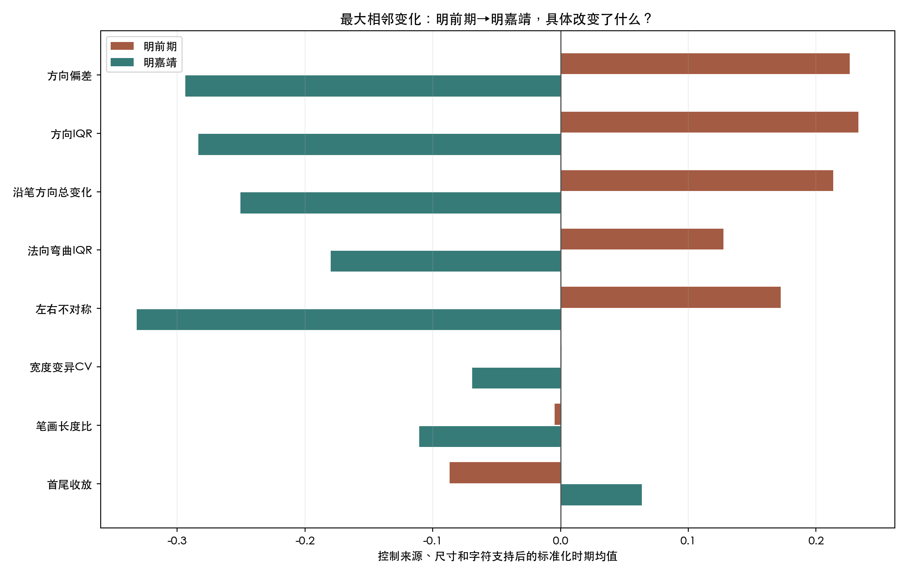
从明前期到明嘉靖，变化最一致的不是简单的“字变粗”或“字变细”，而是笔画内部的波动下降：局部方向偏差约从+0.226降到−0.294，方向IQR从+0.233降到−0.284，沿笔方向总变化从+0.213降到−0.251，左右不对称从+0.173降到−0.332；法向弯曲离散也同步降低。相对而言，嘉靖组的笔画更接近稳定方向、两侧墨宽更均衡，明前期组则更容易出现偏斜、局部摆动和左右宽度不匀。
展开真实书影：明前期的两个中心样本（悬浮可局部放大）
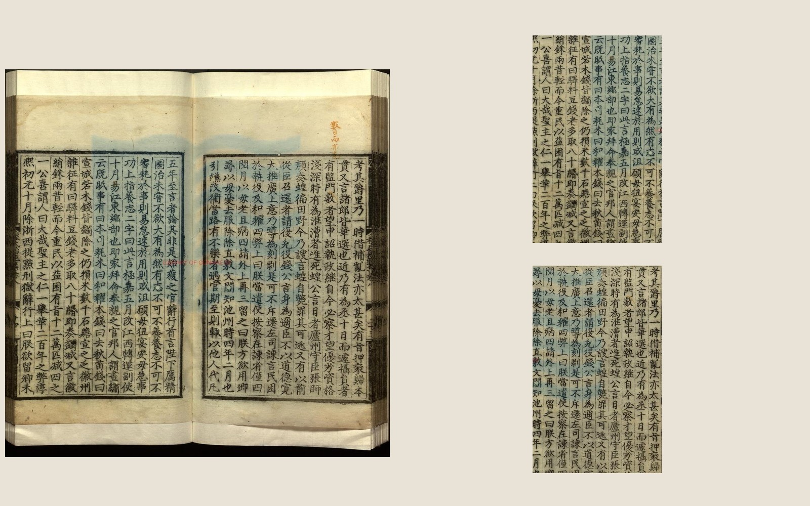
《程氏贻范集三十卷》｜明前期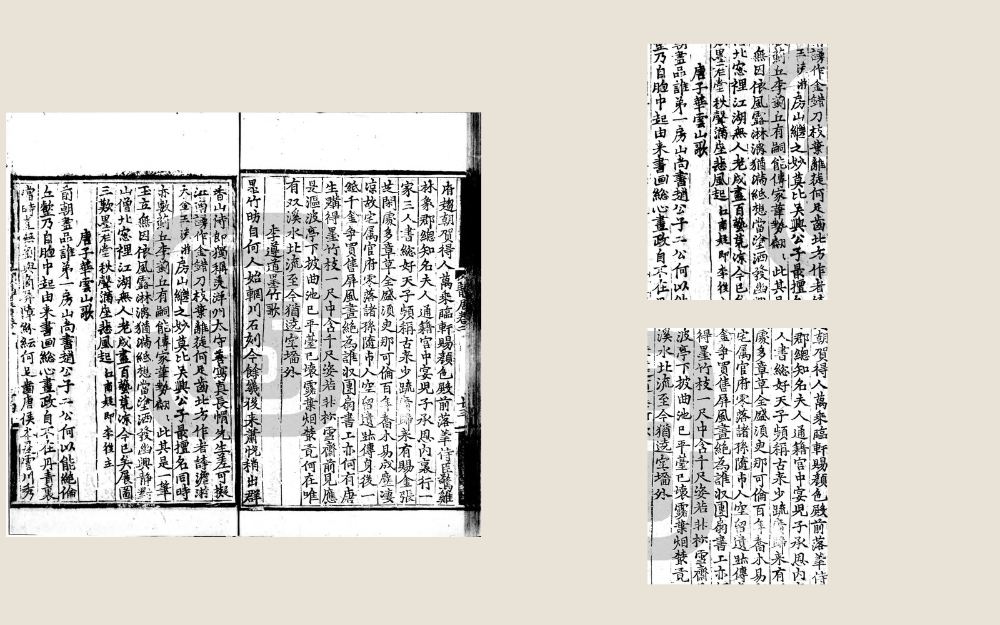
《静居集》｜明前期阅读时可注意竖画与斜画方向是否稳定、长笔内部是否摆动，以及中心线两侧墨宽是否相近。第二页尤其显示较明显的书写性起伏；这类现象会推高方向离散和不对称指标。
展开真实书影：明嘉靖的两个中心样本（悬浮可局部放大）
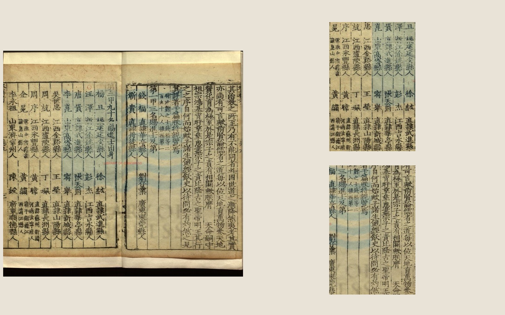
《皇明进士登科考十三卷》｜明嘉靖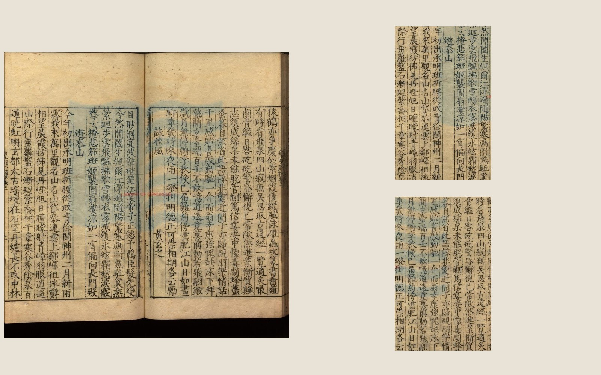
《皇明诗钞五卷》｜明嘉靖可对照观察横竖笔的方向一致性、长笔的局部摆动和字内墨宽平衡。它们只代表接近嘉靖组质心的实例，不代表全部嘉靖刊本。
展开PDF来源与标签版本表
四页均按PDF合并页序取中间页，并直接提取PDF内嵌原图；右侧局部切片来自同一页，没有另换样本。标签读取自冻结表16_Mac训练必要资源/data/book_labels.csv，SHA-256：cb659ff8d561528d869dabc80a17a5e2252562df8c587a5ef903b0defba06329。
| 书号 | 书名 | 版本著录 | 影像来源 | PDF文件／公开入口 | 本页位置 | 时期标签 | 官私 | 标签依据 | 标签状态 |
|---|---|---|---|---|---|---|---|---|---|
| P2:01045 | 程氏貽範集三十卷 | 明成化間刻本 | 台湾图书馆古籍资源（台图特藏） | 01045·程氏貽範集三十卷_明程敏政輯_明成化間刻本.pdf | 合并页序 361/722 | 明前期 | 私 | 版本年号：成化 | 年号映射 |
| P1:036 | 静居集 | 明初本 | 中国国家图书馆 | http://read.nlc.cn/allSearch/searchDetail?searchType=10024&showType=1&indexName=data_892&fid=4119990134957 | 合并页序 82/163 | 明前期 | 私 | 一期明初本/明前期体系标签；嘉靖之前宽分期 | 体系标签 |
| P2:04757 | 皇明進士登科考十三卷 | 明嘉靖間刻本 | 台湾图书馆古籍资源（台图特藏） | 04757·皇明進士登科考十三卷_明嘉靖間刻本.pdf | 合并页序 256/512 | 明嘉靖 | 私 | 版本年号：嘉靖 | 年号映射 |
| P2:04784 | 皇明詩鈔五卷 | 明嘉靖間刻本 | 台湾图书馆古籍资源（台图特藏） | 04784·皇明詩鈔五卷_明楊慎輯_明陳仕賢序_明嘉靖間刻本.pdf | 合并页序 37/73 | 明嘉靖 | 私 | 版本年号：嘉靖 | 年号映射 |
“PDF文件／公开入口”保留书目表中的公开入口或馆藏文件名，不公开服务器内部绝对路径。标签是项目版本学标签，不等于仅从字形反推的年代真值。
先看懂这些指标是什么意思
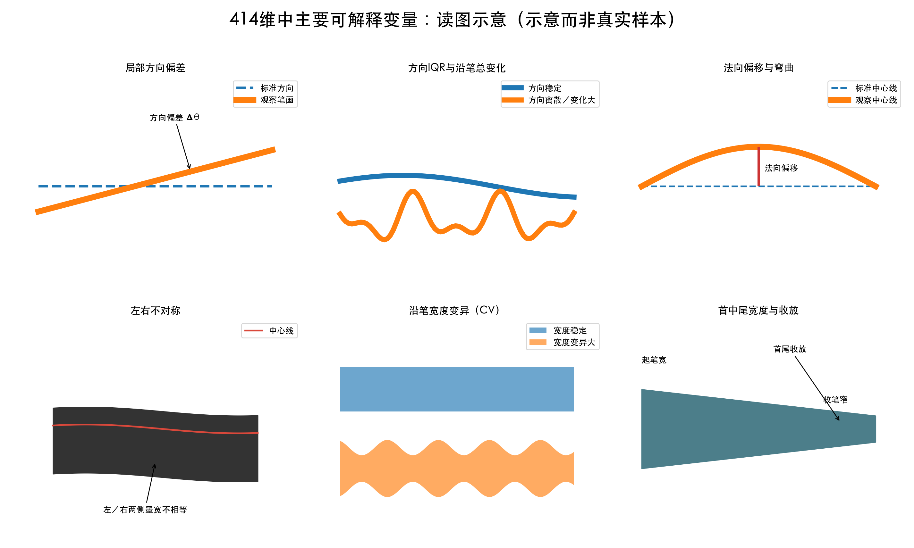
方向偏差看观察笔画相对标准方向偏了多少；方向IQR和沿笔总变化描述一笔内部是否来回摆动；法向偏移描述中心线向侧面弯曲；左右不对称比较中心线两侧墨宽；宽度CV描述粗细是否忽宽忽窄；首尾收放比较起、中、末端宽度。下面的时期曲线正是这些量在真实书稿中的控制后平均。
具体趋势是什么？
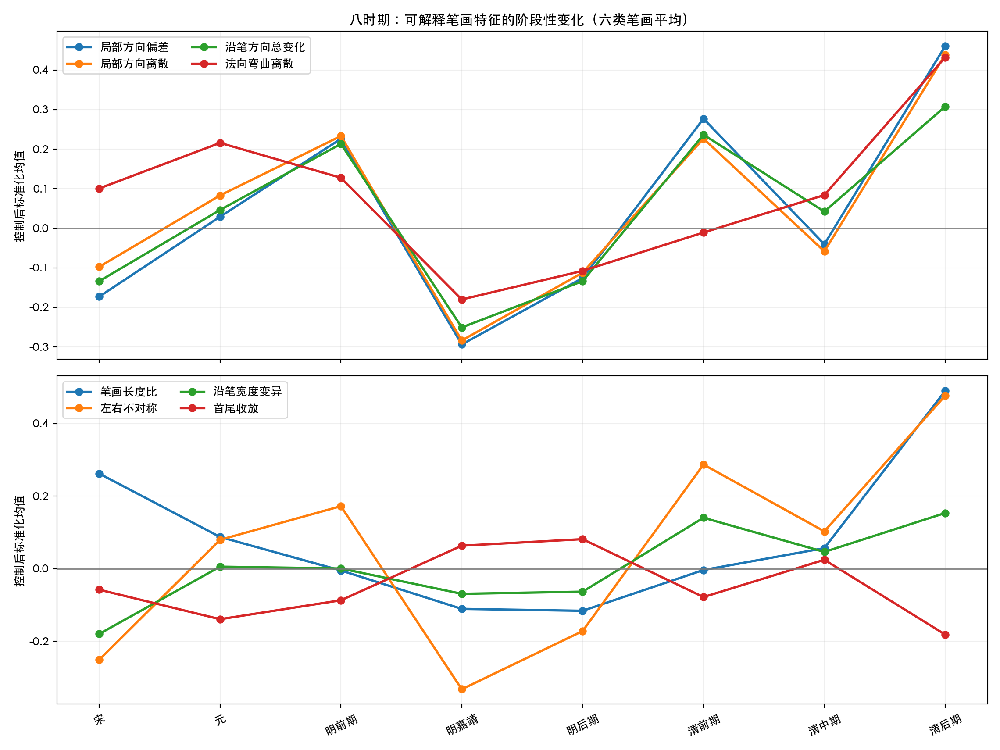
- 宋：平均笔画长度偏高，但局部方向变化、不对称和宽度变异相对低。
- 元—明前期：局部方向偏差和方向离散上升，明前期达到一个相对高点。
- 明嘉靖：方向离散、沿笔变化和不对称显著回落，形成明前期→嘉靖的大幅重排。
- 明后期：整体仍偏规则，和嘉靖距离较小。
- 清前期：方向变化和左右不对称重新上升。
- 清中期：多数指标回到中间位置。
- 清后期：长度、方向偏差、方向离散、法向弯曲、不对称和宽度变异普遍升高，因此与嘉靖、明后期、宋元等多个时期距离较大。
八、官刻与私刻有没有显著差距？
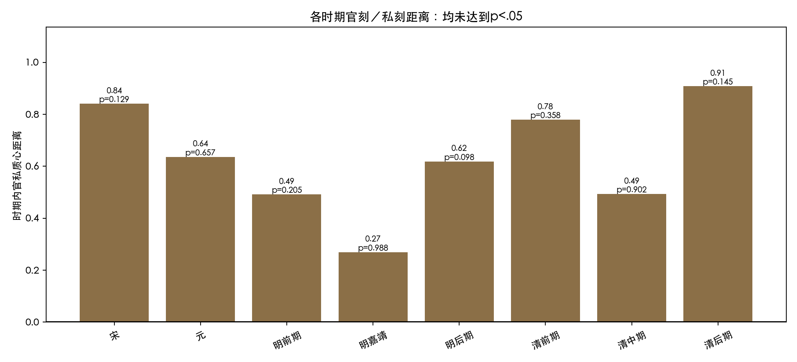
距离最大的清后期、宋和清前期仍未达到时期内部置换p<.05；414维逐特征共有3,312项时期内比较，BH校正后0项q<.05。
目前不可说：官刻和私刻构成跨时期固定、稳定显著的两类字体。
| period | official_books | private_books | centroid_distance_414 | permutation_p |
|---|---|---|---|---|
| 清后期 | 7 | 17 | 0.909 | 0.145 |
| 宋 | 7 | 11 | 0.841 | 0.129 |
| 清前期 | 7 | 57 | 0.780 | 0.358 |
| 元 | 5 | 8 | 0.636 | 0.657 |
| 明后期 | 14 | 124 | 0.619 | 0.098 |
| 清中期 | 13 | 48 | 0.494 | 0.902 |
| 明前期 | 14 | 13 | 0.492 | 0.205 |
| 明嘉靖 | 15 | 22 | 0.269 | 0.988 |
九、三锚分类与清代无监督聚类
三分类任务是什么？
三类不是抽象的“宋体／欧体／软体”，而是三本具体实体锚书：①《汉书评林》，②《唐诗百名家全集》，③《全唐诗》。模型每次联合三个不同字符，并要求笔画类型覆盖，用23项逐笔特征和32点局部profile判断更像哪一本实体书。
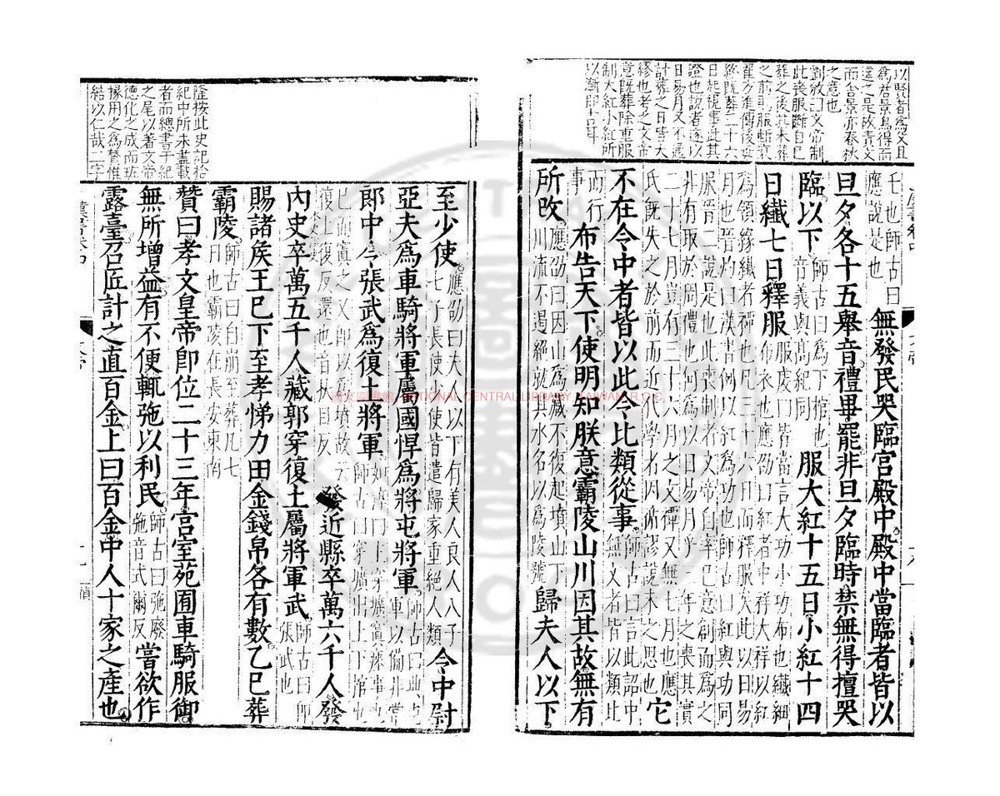
《汉书评林》实体锚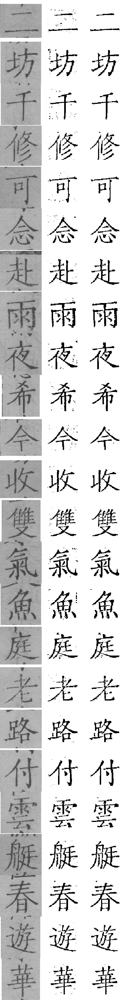
《唐诗百名家全集》实体锚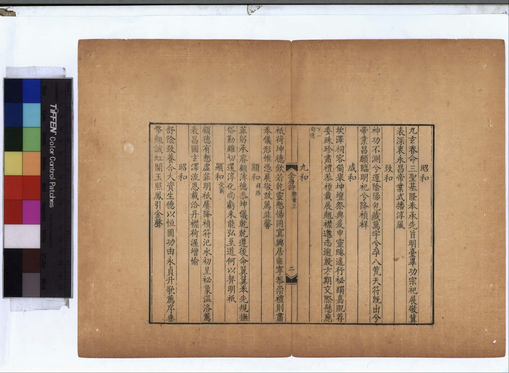
《全唐诗》实体锚找到了什么？
- 冻结字符测试准确率98.4%，含义是“未见字符、但仍是已见三本书”。
- 投影到清代154本：139本最接近《汉书评林》、3本最接近《唐诗百名家全集》、6本最接近《全唐诗》、6本证据不足。
- 这一结果明显不平衡，只能报告实体锚相似度，不能把139本直接叫作某种通用字体。
清代无监督空间
不使用三锚标签独立拟合清代空间。诊断性K=3规模为10／82／53，silhouette仅0.136；聚类与监督三锚标签的一致性很低（ARI约0.027，NMI约0.045）。因此更合理的解释是连续形态地图，而不是天然三种字体。
研究边界与下一步
- Make Me a Hanzi是现代标准拓扑，不是历史真实运笔；异体冲突时应拒绝强套。
- 没有历史清洁GT，去噪、补墨和残差不能自动证明历史正确。
- 时期差异是关联，不是时代的因果效应；地域、刊刻机构和版本系统仍可能混杂。
- 官私样本高度不平衡，例如明后期私刻远多于官刻，未显著不等于绝对无差异。
- 时期分类目前为探索性：特征中心化和残差化在交叉验证前完成，正式发表需要完整嵌套到训练折。
- 下一步应把高低趋势书的整页、局部放大和同字逐笔剖面并排，进行不知道数值的盲审。